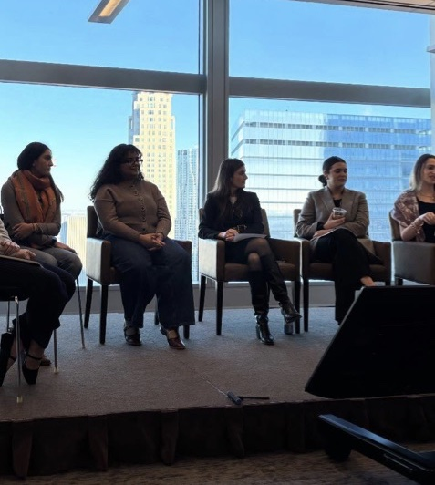
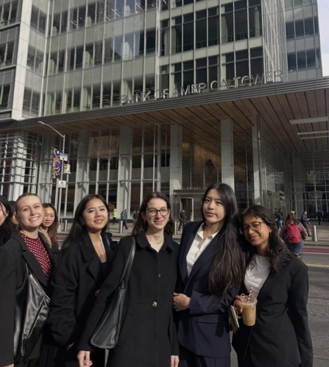
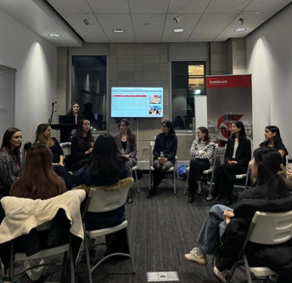

Speaker events
Fireside chats and panels with professionals from BlackRock, KKR, Blackstone and Morgan Stanley, many of them Barnard and Columbia alumnae.
History
Barnard Investment Group was founded to address a gap in finance resources for Barnard students. Without a finance major, a shared recruiting platform with Columbia, or an established alumni network in the industry, Barnard students were often recruiting without support.
Today, BIG brings industry professionals to campus, organizes visits to leading financial institutions, and teaches the technical and personal-finance skills that a career in finance requires. The club is led by Barnard students, and its events are open to the entire Columbia community.
“My recruiting process was what really highlighted a lot of the lack of resources and community.”
What we do

Fireside chats and panels with professionals from BlackRock, KKR, Blackstone and Morgan Stanley, many of them Barnard and Columbia alumnae.

Trips to Goldman Sachs, Bank of America and HSBC to see the floor, meet the teams, and picture yourself there.

Technicals, resume reviews, and candid Q&As with upperclassmen who just went through recruiting.
General body meetings and workshops on personal finance for real life, from investing basics to renting in New York.